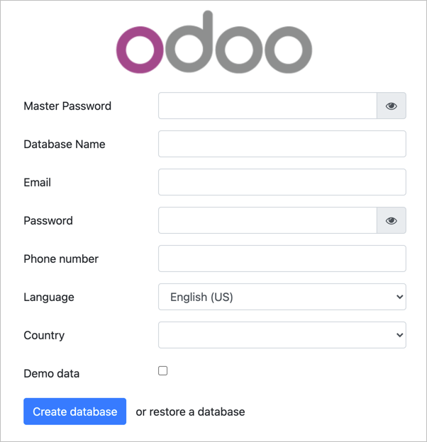

1. Set Up the Installation Environment
1. Update the system packages.
2. Install Git.
3. Install Pip.
sudo apt install python3-pip -y
4. Install other required dependencies.
sudo apt install -y build-essential wget python3-dev python3-venv python3-wheel libfreetype6-dev libxml2-dev libzip-dev libldap2-dev libsasl2-dev python3-setuptools node-less libjpeg-dev zlib1g-dev libpq-dev libxslt1-dev libldap2-dev libtiff5-dev libjpeg8-dev libopenjp2-7-dev liblcms2-dev libwebp-dev libharfbuzz-dev libfribidi-dev libxcb1-dev
5. Create a new odoo user.
2. Install and Configure PostgreSQL
1. Add PostgreSQL Repositories.
sudo sh -c 'echo "deb http://apt.postgresql.org/pub/repos/apt/ `lsb_release -cs`-pgdg main" >> /etc/apt/sources.list.d/pgdg.list'
2. Download PostgreSQL.
wget -q https://www.postgresql.org/media/keys/ACCC4CF8.asc -O - | sudo apt-key add -
3. Install PostgreSQL.
sudo apt install postgresql postgresql-contrib -y
4. Start the database server.
sudo systemctl start postgresql
5. Enable the database server to start automatically on system boot.
sudo systemctl enable postgresql
6. Change the default PostgreSQL password.
7. Switch to the postgres user.
8. Create a database user named odoo.
9. Go to the PostgreSQL interactive shell.
10. Give the database user odoo permission to create databases.
ALTER USER odoo WITH CREATEDB;
11. Exit the interactive shell.
12. Exit from postgres user account.
3. Install Wkhtmltopdf
1. Download Wkhtmltopdf from GitHub.
sudo wget https://github.com/wkhtmltopdf/packaging/releases/download/0.12.6-1/wkhtmltox_0.12.6-1.focal_amd64.deb
2. Install Wkhtmltopdf.
sudo apt install ./wkhtmltox_0.12.6-1.focal_amd64.deb -y
4. Install Odoo
1. Create a directory for Odoo.
sudo mkdir -p /opt/odoo/odoo
2. Set owner to the odoo user
sudo chown -R odoo:odoo /opt/odoo
3. Switch to the odoo user account
4. Clone the Odoo 15 source code from GitHub to /opt/odoo/odoo directory.
git clone https://www.github.com/odoo/odoo --depth 1 --branch 15.0 /opt/odoo/odoo
5. Go to /opt/odoo
6. Create a new Python virtual environment for Odoo.
python3 -m venv odoo-venv
7. Activate the virtual environment.
source odoo-venv/bin/activate
8. Install wheel
9. Install all required Python modules with pip3
pip3 install -r odoo/requirements.txt
10. Deactivate the environment.
11. Create a new directory for 3rd party add-ons.
mkdir /opt/odoo/odoo-custom-addons
12. Exit from odoo user account.
13. Create a new directory.
14. Create a configuration file.
sudo nano /etc/odoo/odoo.conf
15. Add the following code to the file. Change P@ssw0rd to a unique password.
[options]
; This is the password that allows database operations:
admin_passwd = P@ssw0rd
db_host = False
db_port = False
db_user = odoo
db_password = False
addons_path = /opt/odoo/odoo/addons,/opt/odoo/odoo-custom-addons
Press
Ctrl
+
X
Press
Y
Press
Enter
4. Create a Service Unit File
1. Create a service unit file called odoo.service.
sudo nano /etc/systemd/system/odoo.service
2. Add the following code to the file. Close and save the file.
[Unit]
Description=Odoo15
Requires=postgresql.service
After=network.target postgresql.service
[Service]
Type=simple
SyslogIdentifier=odoo
PermissionsStartOnly=true
User=odoo
Group=odoo
ExecStart=/opt/odoo/odoo-venv/bin/python3 /opt/odoo/odoo/odoo-bin -c /etc/odoo/odoo.conf
StandardOutput=journal+console
[Install]
WantedBy=multi-user.target
Press
Ctrl
+
X
Press
Y
Press
Enter
3. Reload system daemon for changes to take effect.
sudo systemctl daemon-reload
4. Start the Odoo service.
sudo systemctl start odoo
5. Enable the service to start on system boot.
sudo systemctl enable odoo
5. Interface
To access the Odoo web interface, navigate to your server's IP address at port 8069 in your web browser. For example, http://Your_IP_Address:8069. You should see the database setup screen:
